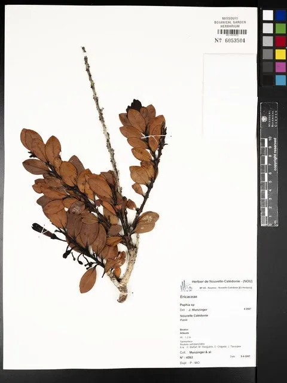

软体动物 · 动物界
波纹巴非蛤 Paphia undulata

壳面有波状褐色花纹的中型蛤蜊，生活在沙泥底质中，肉味鲜美，是中国东南沿海重要的养殖和食用贝类。
- 分类
- 门软体动物门纲双壳纲目帘蛤目科帘蛤科属巴非蛤属
- 栖息环境
- 潮间带下区至水深二十米的沙泥和泥沙底质海底
- 地理分布
- 印度洋至西太平洋热带和亚热带海域，包括中国东南沿海、日本南部、菲律宾和泰国
- 保护级别
- 尚无保护级别；资源受采捕和近岸污染影响
物种志
波纹巴非蛤的贝壳呈长卵圆形，壳长约五至七厘米，壳质较厚，两壳侧扁，壳面光滑，呈黄白至浅褐色，上面有波状的褐色花纹和细密的同心生长纹，壳顶稍突出，略偏向前方，壳缘光滑，壳内面白色，铰合部有主齿。足部侧扁，水管较长，末端有触手。它靠足部在沙泥中掘穴，滤食时把水管伸出沙面。壳面的波状花纹是它最明显的特征。
它分布于印度洋至西太平洋的热带和亚热带海域，包括中国东南沿海、日本南部、菲律宾、泰国和澳大利亚北部，栖息在潮间带下区至水深二十米的沙泥和泥沙底质海底，常成群密集分布。它以硅藻和有机碎屑为食，靠水管滤食，生长较快。繁殖期在春夏，雌雄异体，幼虫经浮游阶段后附着到沙泥底。波纹巴非蛤肉味鲜美，是中国东南沿海重要的养殖和食用贝类，可鲜食、炒食或制蛤干。目前尚无保护级别，资源受采捕和近岸污染影响。
形态与习性
- 食性滤食硅藻和有机碎屑
- 壳长约五至七厘米，壳侧扁呈长卵圆形
- 花纹黄白底上有波状褐色花纹
- 栖息深度潮间带下区至水深二十米的沙泥底
- 繁殖春夏繁殖，幼虫经浮游期后附着沙泥底
- 利用东南沿海重要养殖贝类，可鲜食或制蛤干
趣味知识
- 波纹巴非蛤壳面上的褐色花纹呈波浪状，像水面的涟漪，名字由此而来。
- 它常成群埋在沙泥里，退潮后滩面上能看到密密麻麻的水管孔。
- 闽南一带把它叫做花蛤，是炒海瓜子、做蛤蜊汤的常用原料。